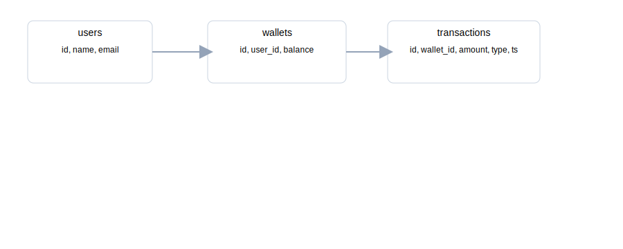
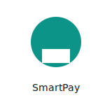

E-Tol SmartPay
Ringkasan: Aplikasi dompet elektronik khusus untuk pembayaran jalan tol dan parkir. Memiliki fitur top-up, riwayat transaksi, integrasi QR, dan notifikasi saldo rendah.
Keunggulan
- Integrasi realtime dengan reader tol untuk transaksi cepat (latensi rendah).
- Fitur top-up via bank & e-wallet; riwayat dan refund sederhana.
- Notifikasi otomatis dan analitik penggunaan untuk ringkasan pengeluaran.
Flowchart
Flowchart sederhana (file: assets/flowchart.svg)

ERD
Entitas utama: users, wallets, transactions, toll_gates
Logo Aplikasi
Teknologi yang digunakan
- Frontend: React (CRA / Vite)
- Backend: Express.js (Node.js)
- Database: PostgreSQL / TimescaleDB (opsional untuk histori)
- Auth: JWT, OAuth (opsional)
- Infrastructure: Docker, Nginx, CI/CD (GitHub Actions)